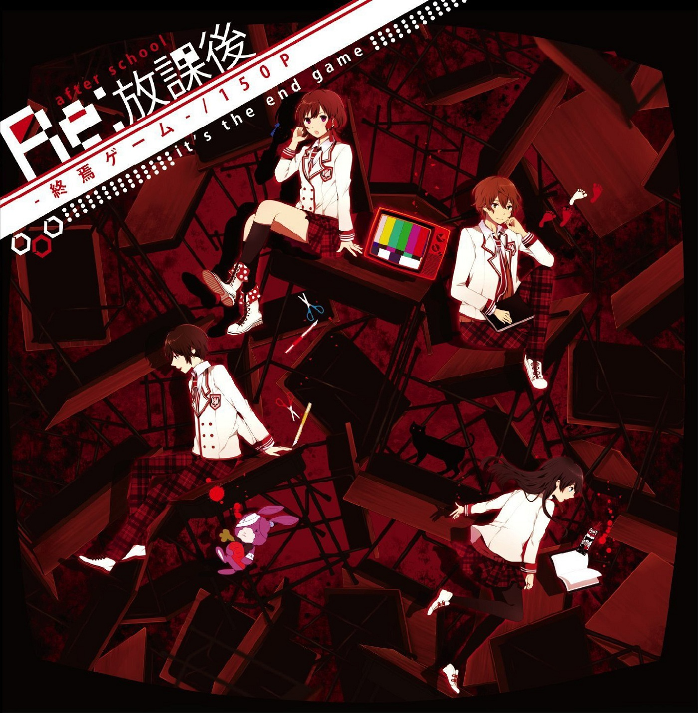
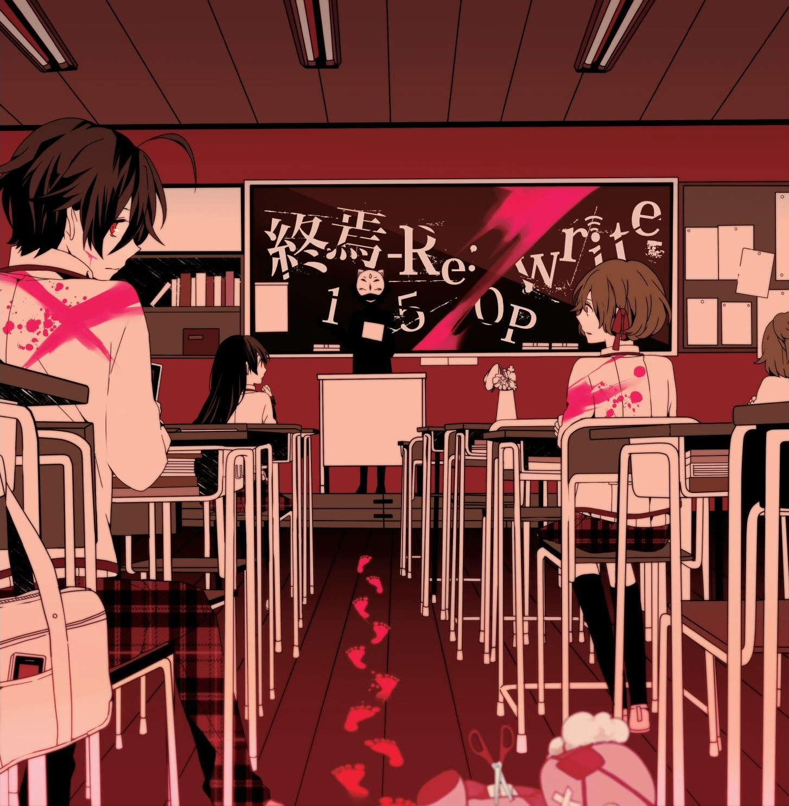
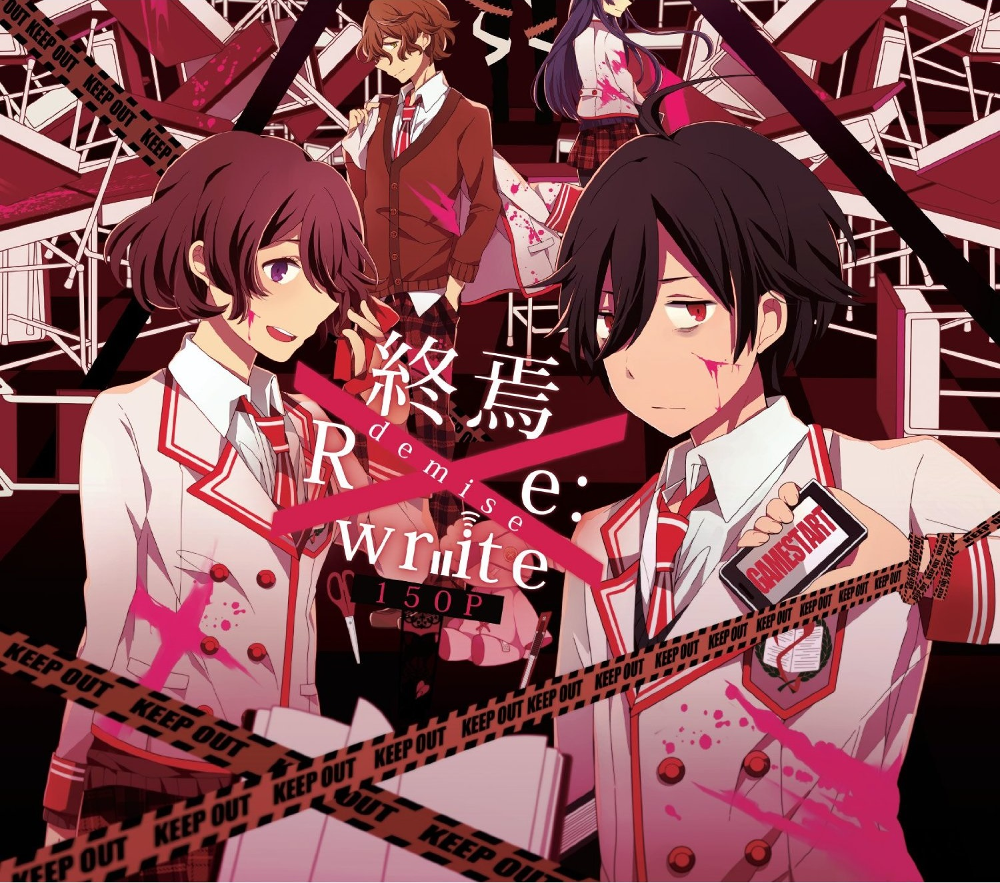
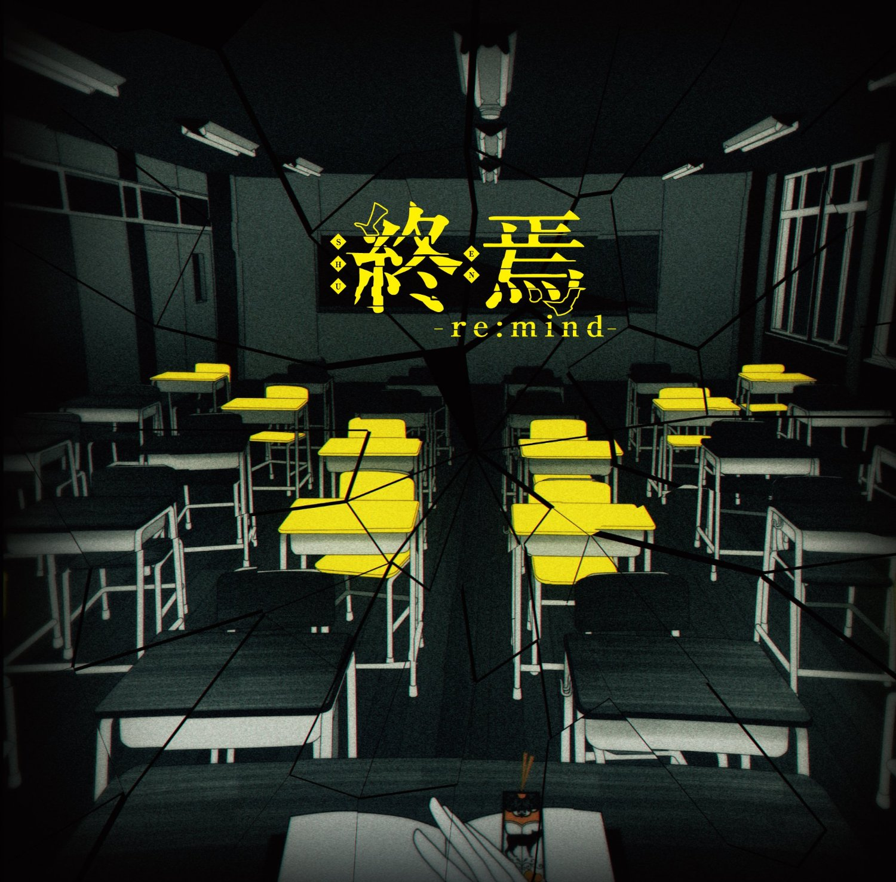
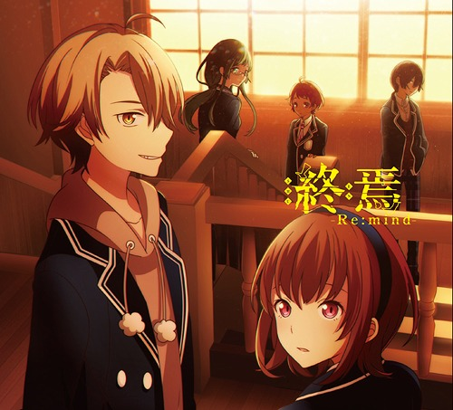
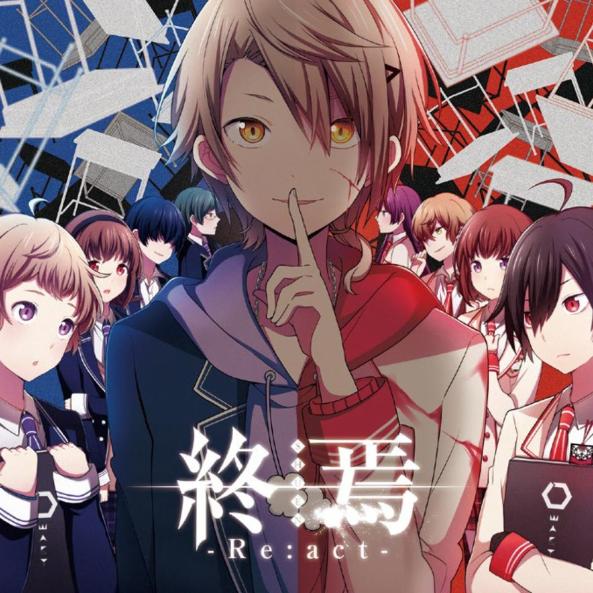
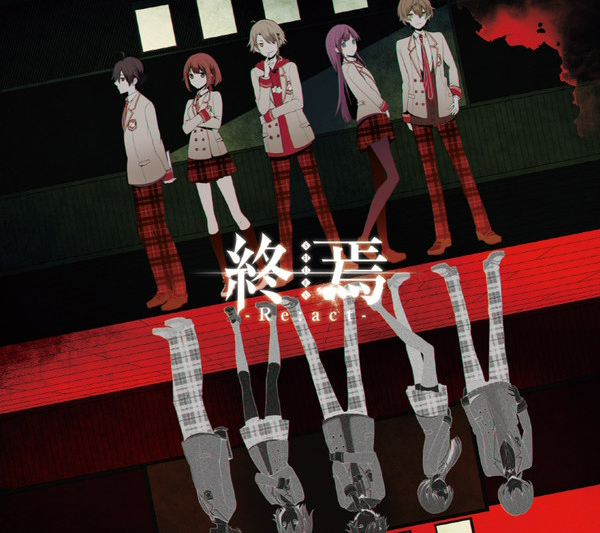

Albums / Songs
There are 5 albums in Shuuen no Shiori. There is also an exclusive CD / album with two songs translated here (Shuuen Scanlations). The two songs are included in Shuuen -Re:mind- as well.
-
Re:Houkago -Shuuen Game- (Re:放課後-終焉ゲーム-)
(Released 2012/08/11)
A doujin CD that acted sort of like a one-shot album for Shuuen. Included the original IA versions of the first four songs (except NND / final version of D-ne's song) and 2 new songs. 12 total tracks.
Links: -
Shuuen -Re:write- (終焉 -Re:write-)
(Released 2013/03/13)
 First major album of Shuuen! Focuses on the occult club. Includes new unique Vocaloid covers of the occult club's songs plus Underdog Supremacy, Common Heroes, and a remaster of Bookmark of Demise. Included 4 new songs. 27 total tracks + 5-track arrangement mini-album (limited edition).
Links: -
Unlucky -Makki- @ School Trip (アンラッキー末期ー@スクールトリップ)
(Released 2013/11/24)

Spinoff / "Summer Vacation Trip AU" album. Includes 7 new songs sung by IA. 11 total tracks.
Links: -
Shuuen -Re:mind- (終焉 -Re:mind-)
(Released 2015/03/25)
 Second major album of Shuuen! Focuses on the film club. Includes 13 new songs, including the character-focused songs of the film club. Only one song has received an official MV. 19 total tracks.
Links: -
Shuuen -Re:act- (終焉 -Re:act-)
(Released 2015/09/23)
 
Third major album of Shuuen! A special album which includes all 9 character songs covered by their respective voice actors. Also includes 2 new songs. 17 total tracks + (limited editions) 8 track voice drama CD + 2 special tracks.
Links: